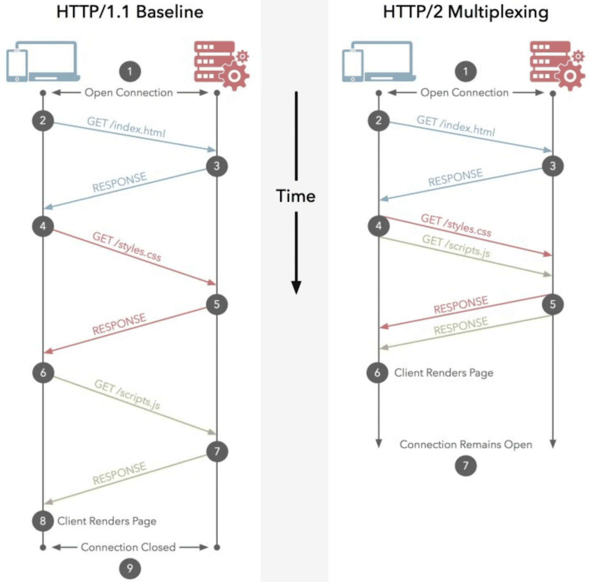

HTTP长连接

Contents
长链接
我们知道tcp层级有长连接短连接；长连接，是指建立连接后保持，不断开。http长连接基于tcp层级长连接，基于一次tcp长量级，传输多次请求。并不是tcp支持长连接了，上层的应用协议就支持长量级，上层协议必须自己能区分出每次请求，知道一次交互什么时间结束，否则上层协议是无法使用长连接的。因此在早起的http版本，是不支持长链接的，http1.1开始支持并默认使用。
http各版本区别
HTTP 1.0
1.0规定浏览器与服务器只保持短暂的连接，浏览器的每次请求都需要与服务器建立一个TCP连接，服务器完成请求处理后立即断开TCP连接，服务器不跟踪每个客户也不记录过去的请求。HTTP1.0是没有host域的，HTTP1.1才支持这个参数。
HTTP 1.1
1.1则支持持久连接Persistent Connection, 并且默认使用persistent connection. 在同一个tcp的连接中可以传送多个HTTP请求和响应. 请求和响应可以重叠（多个链接）。 HTTP 1.1支持只发送header信息(不带任何body信息)，如果服务器认为客户端有权限请求服务器，则返回100，否则返回401。客户端如果接受到100，才开始把请求body发送到服务器。这样当服务器返回401的时候，客户端就可以不用发送请求body了，节约了带宽。另外HTTP还支持传送内容的一部分。这样当客户端已经有一部分的资源后，只需要跟服务器请求另外的部分资源即可。这是支持文件断点续传的基础。
HTTP2.0
2.0使用多路复用技术(Multiplexing),多路复用允许同时通过单一的 HTTP/2 连接发起多重的请求-响应消息。 “HTTP1.1在同一时间对于同一个域名的请求数量有限制，超过限制就会阻塞请求”。多路复用底层采用"增加二进制分帧层"的方法，使得不改变原来的语义、首部字段的情况下提高传输性能，降低延迟。 二进制分帧将所有传输信息分割为更小的帧，用二进制进行编码，多个请求都在同一个TCP连接上完成，可以承载任意数量的双向数据流。HTTP/2更有效的使用TCP连接，得到性能上的提升。

Go http库
go自带的http client库支持长链接，默认会使用。库中会自动缓存链接，每次发请求找一个存在的链接使用，使用者无需关心。 使用： https://nanxiao.me/en/a-brief-intro-of-tcp-keep-alive-in-gos-http-implementation/
代码： 详解golang net之transport https://www.cnblogs.com/charlieroro/p/11409153.html
Author Cheney
LastMod 2010-07-10
License GPL